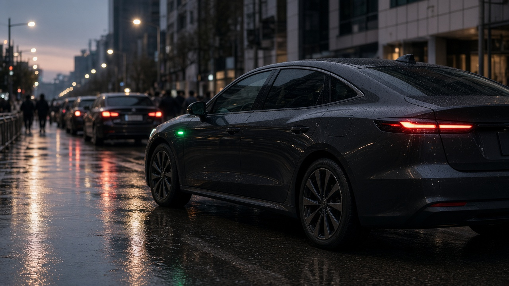
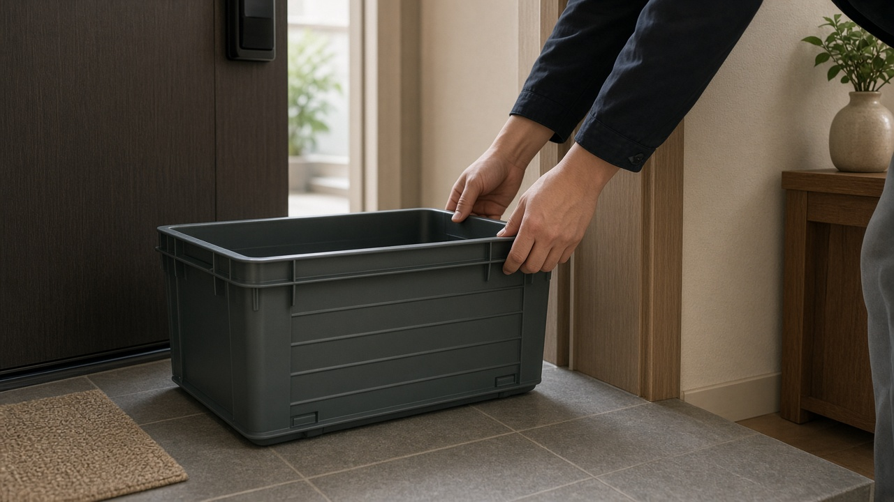

탄소중립포인트가 11월부터 19개로 늘어요, 전기수소 택시와 다회용 택배상자 확인 포인트

카페에서 텀블러를 쓰거나 전자영수증을 받는 분들은 이미 탄소중립포인트를 들어보셨을 거예요.
11월 7일 기준으로 보면 녹색생활 실천 항목이 기존 17개에서 19개로 늘어나고, 새로 들어가는 두 가지가 전기차와 수소차 택시 이용, 그리고 다회용 택배상자 사용이에요.
연간 인센티브 한도는 1인당 최대 7만 원으로 안내되고 있는데, 한도는 상한이지 무조건 받는 금액은 아니에요.
무엇이 바뀌는지, 이용 전에 어디를 봐야 하는지 순서대로 정리해 볼게요.
11월부터 적립 대상이 19개로 늘고, 새 항목은 택시와 택배상자예요
대한민국 정책브리핑이 소개한 2026년 하반기 달라지는 제도에 따르면 탄소중립포인트 지급 항목은 전자영수증 발급과 텀블러 이용 등 17개에서, 11월부터 전기차 수소차 택시 이용과 다회용 택배상자 사용을 포함한 19개로 확대돼요.
물류신문 11월 3일 보도도 무탄소 택시 이용과 다회용 택배상자 사용이 추가된다고 같은 방향을 전했어요.
항목 수를 세는 기준이 매체마다 조금 다르게 적힌 경우가 있어, 제도 안내의 기준으로는 정책브리핑이 밝힌 17개에서 19개 확대를 기준으로 보시면 돼요.
새 항목이 생겼다고 해서 연간 최대 7만 원 한도가 함께 올라간다고 안내된 것은 아니에요.
실제로 받는 금액은 인정 실적과 항목별 기준, 예산 운영에 따라 달라져요.

전기수소 택시는 앱에서 따로 지정해야 실적으로 이어질 수 있어요
무탄소 택시라는 말은 전기택시나 수소택시를 뜻해요.
그냥 택시를 탔다는 사실만으로 모든 이용이 자동 적립된다고 보기 어렵고, 정책 안내와 보도는 이용하는 앱 등에서 전기나 수소 택시를 따로 지정해 이용하는 방식을 전제로 설명하고 있어요.
그래서 평소 쓰는 호출 앱에 무탄소 차량 선택 메뉴가 있는지, 그 서비스가 탄소중립포인트 참여 사업자인지부터 확인하는 편이 안전해요.
차량만 전기차처럼 보여도 제도 연동이 안 되어 있으면 실적으로 안 잡힐 수 있어요.
단가나 건당 적립액은 참여기업과 운영 안내가 확정된 뒤 공식 누리집과 카본페이에서 확인하는 것이 좋아요.
다회용 택배상자도 참여 업체 연계 방식인지 봐야 해요
온라인 주문이 늘면서 일회용 포장재가 쌓이는 문제를 줄이려는 방식이 다회용 택배상자예요.
다만 모든 회수형 상자나 친환경처럼 보이는 포장이 곧바로 적립 대상은 아니에요.
제도에 참여하는 업체의 인정 방식에 따라 실적이 처리되므로, 주문하려는 쇼핑몰이나 배송 옵션에 다회용 상자 선택과 반납 안내가 있는지 먼저 확인해야 해요.
상자만 받고 반납 절차를 건너뛰면 인정 조건이 충족되지 않을 수 있어요.
새 항목의 구체적인 적립 단가는 공지와 참여기업 매뉴얼이 갱신되는 시점에 맞춰 공식 화면에서 확인하는 것이 맞아요.
가입과 지급 수단을 먼저 맞춘 뒤 실천을 시작하는 편이 좋아요
탄소중립포인트 녹색생활 실천은 통합 누리집 cpoint.or.kr 또는 카본페이 앱에서 회원가입 후 참여할 수 있어요.
가입 전에 한 실천이 나중에 자동으로 소급된다고 단정하지 않는 편이 좋아요.
현금이나 모바일 페이처럼 안내된 인센티브 수령 수단을 등록해 두고, 자주 쓰는 카페 쇼핑 교통 서비스가 참여 항목과 연결돼 있는지도 함께 점검하세요.
기존 전자영수증 텀블러 다회용컵 같은 항목도 참여 매장과 계정 연결 상태가 맞아야 실적으로 잡혀요.
월별 활동은 안내된 정산 주기에 따라 지급되므로, 당일 바로 들어온다고 기대하기보다 내역 화면을 주기적으로 확인하는 방식이 현실적이에요.
지금 바로 확인해 두면 좋은 체크리스트
첫째, 정책브리핑 기준으로 11월부터 항목이 19개로 늘어난다는 점과 새 두 항목의 이름을 기억해 두세요.
둘째, 택시 앱에서 전기 또는 수소 차량을 지정하는 메뉴와 참여 여부를 확인하세요.
셋째, 다회용 택배상자는 주문 옵션과 반납 방식, 참여 업체 여부를 주문 전에 확인하세요.
넷째, cpoint.or.kr 또는 카본페이에서 회원 정보와 지급 수단, 기존 항목 연동 상태를 점검하세요.
오늘 글은 일반 정보 정리이며 개별 상담이나 수익을 보장하는 안내가 아니에요. 정확한 단가와 인정 조건은 탄소중립포인트 공식 누리집과 카본페이, 참여기업 안내를 기준으로 확인해 주세요.
참고 자료 대한민국 정책브리핑 2026년 7월 6일 2026 하반기 달라지는 제도 환경 국토 교통 기사, 물류신문 2026년 11월 3일 탄소중립포인트제 다회용 택배상자 포함 기사, 탄소중립포인트 통합 누리집 cpoint.or.kr, 한국환경산업기술원 탄소중립포인트 제도 안내
태그 탄소중립포인트 전기택시 수소택시 다회용택배상자 카본페이 녹색생활실천 기후에너지환경부 인센티브7만원 cpoint 친환경생활